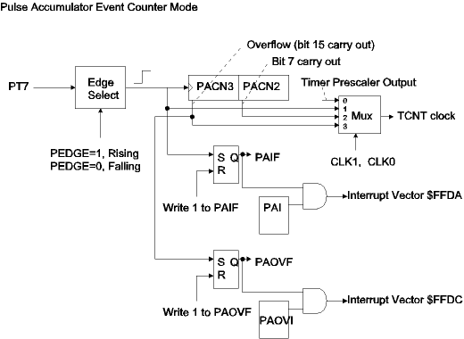
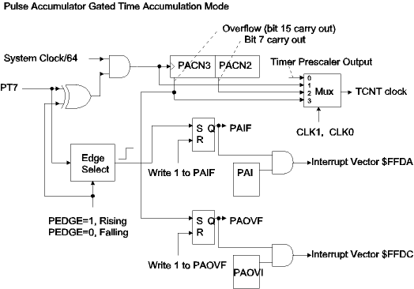

| Previous Section | Next Section | Index | Questions | Search the Text |
The Pulse Accumulator is a 16 bit counter triggered from an external input (pin PT7). It has two modes of operation, Event Counter and Gated Time Accumulator. The Pulse Accumulator can also be used to supply the clock for the TCNT register. There is a single control register, PACTL, a single status register, PAFLG, and a word data register, which is accessed as PACN3, which is the Pulse Accumulator count. Unlike the TCNT register, PACN3 can be both read and written. (Note that word register PACN3 is actually byte registers PACN3:PACN2 which are merged for the 16 bit pulse accumulator in the HCS12.)
| Pulse Accumulator Control and Status Registers | ||||||||
| Register | Bit 7 | Bit 6 | Bit 5 | Bit 4 | Bit 3 | Bit 2 | Bit 1 | Bit 0 |
|---|---|---|---|---|---|---|---|---|
| PACTL | 0 | PAEN | PAMOD | PEDGE | CLK1 | CLK0 | PAOVI | PAI |
| PAFLG | 0 | 0 | 0 | 0 | 0 | 0 | PAOVF | PAIF |
The Pulse Accumulator runs somewhat independently from the Timer and is enabled by setting bit PAEN to 1. The PAMOD bit determines the operating mode. When 0, the mode is "Event Counter" and the circuit behaves like the block diagram:

The events to be counted are either rising or falling edges on PT7, as selected by the PEDGE bit. Every event will set the PAIF flag, which can be reset by writing a 1 to it. If the PAI bit is 1, then PAIF will cause an interrupt request using vector $FFDA.
The counter can be extended to allow larger counts. When the 16 bit counter overflows (count goes from 65535 to 0), the PAOVF flag will be set. The PAOVF flag can be reset by writing a 1 to it. If the PAOVI bit is 1 then PAOVF will cause an interrupt request using vector $FFDC. An interrupt routine can increment the high order bits of the enlarged counter using the same technique that was shown for TCNT.
The Pulse Accumulator circuit can be used as the clock source for TCNT. When the Pulse Accumulator is enabled, the TCNT clock does not come directly from the timer prescaler, but instead comes from one of four sources selected by a multiplexer controlled by the CLK1 and CLK0 bits. In the default, 0, the multiplexer selects the prescaler output, and TCNT clocks normally. However if a clock source is connected to PT7 then that clock can be used for TCNT. If CLK1=0 and CLK0=1, then the clock source is used directly. If CLK1=1 and CLK0=0, then the lower 8 bits of PACN3 (namely PACN2) are used as a divider and the clock rate is divided by 256. If CLK1=CLK0=1, then the PACN3 overflow is used for the TCNT clock which provides a divide by 65536 of the clock source on PT7.
Important note for simulator use - The provided 68HCS12 Simulator does not implement the TCNT clock source feature.
Earlier we saw how Input Capture could be used to measure the period of a waveform. The frequency of a waveform is simply the inverse of the period. The maximum frequency we could measure was limited by software because we had to capture two consecutive rising (or falling) edges. Additionally, the precision of the frequency measurement at the high end was poor; one system clock resolution of a waveform at 100 kHz gives a frequency precision of one part in 240. We can increase the precision to 1 Hz (one part in 100,000 at 100 kHz) and allow a frequency range of from 1 Hz to over 1 MHz by using the Pulse Accumulator to count edges that occur in a one second period. The maximum frequency is hardware limited, and is not specified in the data sheet. The author ran this program and observed a maximum over 5 MHz.
The following program uses PT7 for the signal input to the Pulse Accumulator and Timer Channel 6 for the one second timer. Since the Pulse Accumulator will overflow at frequencies greater than 65.535 kHz, we will use PAOVF interrupts to increment a high order counter. Timer Channel 6 is set for Output Compare, but does not drive pin PT6. Instead it provides interrupts every 1 ms, and counts one thousand interrupts. At the thousandth interrupt it copies the Pulse Accumulator count to the 32 bit variable, frequency, and then resets the counter. The program will make one frequency measurement per second. The source code is below:
#include registers.inc
org DATASTART ; Data memory
frequency: ; Frequency is 32 bit integer
ds 4
count: ds 2 ; Pulse Accumulator overflow count
mscnt: ds 2 ; millisecond counter
org PRSTART ; Program Memory
lds #DATAEND ; Initialize stack pointer
movw #0 frequency ; initialize RAM
movw #0 frequency+2
movw #0 count
movw #0 mscnt
movw #0 PACN3 ; Pulse Accumulator counter = 0
movw #paovint UserPAccOvf ; Interrupt for counter overflow
movw #tc6int UserTimerCh6 ; Interrupt for channel 6
bset TSCR1 #$80 ; Set TEN (enables Sysclk/64 clock)
bset TIOS #$40 ; Channel 6 is Output compare
bset TIE #$40 ; Channel 6 will cause interrupt
ldd #24000 ; Next Channel 6 interrupt in 1ms
addd TCNT
std TC6
bset PACTL #$42 ; Set PAEN, PAOVI
cli ; enable interrupts
; Idle process
idle: wai
bra idle
paovint: ; Interrupt service routine -- PACN3 overflow
ldx count ; increment overflow count
inx
stx count
bclr PAFLG #~2 ; reset PAOVF
rti
tc6int: ; Interrupt service routine -- Timer Channel 6
ldd TC6 ; Next interrupt in 1 ms
addd #24000
std TC6
bclr TFLG1 #~$40 ; Reset C6F
ldx mscnt ; Increment millisecond counter
inx
cpx #1000 ; One second elapsed?
beq onesecond
stx mscnt ; store count
rti ; wait for next millisecond
onesecond:
ldx PACN3 ; get pulse count
movw #0 PACN3 ; then reset count
ldy count ; get upper (overflow) count
movw #0 count ; then reset count
brclr PAFLG #2 noov ; branch if no PAOV yet
bclr PAFLG #~2 ; reset PAOV
; If there is an overflow, it may have occurred before the
; PACN3 value we are looking at
cpx #0 ; Is PACN3 large?
bmi noov ; Then no adjustment
iny ; else adjust upper count
noov: stx frequency+2 ; store the frequency
sty frequency
movw #0 mscnt ; reset millisecond counter
rti
The only unusual part of the code is the reading of the Pulse Accumulator count in the Timer Channel 6 interrupt service routine. The pulse accumulator is counting continuously and an overflow might have occurred after the interrupt routine has been entered but before the PACN3 register is read. In this case, since the interrupts are disabled during execution of the interrupt service routine, PAFLG will be set and the overflow count will be one count too low. The interrupt routine examines PAFLG, and if it is set resets the flag and increments the overflow count. However if the overflow occurred PACN3 was read but before PAFLG was examined, the overflow count would be correct. The interrupt routine examines the PACN3 value and if it is small (most significant bit zero) assumes that overflow occurred before PACN3 was read and only then adjusts the overflow count. A modified version of this program which displays the values is located here, while the program can be run in the simulator here.
When PAMOD=1, the Pulse Accumulator is in "Gated Time Accumulation" mode, and PT7 is used to gate a clock source (running at System Clock/64) to PACN3. The block diagram in this mode is:

Note that the only difference is in the PACN3 clock source. When PEDGE=0, during the periods when PT7 is high, the clock is enabled to PACN3. With the 1/24 microsecond period system clock, this means that PACN3 will be incremented every 2 2/3 microseconds while PT7 is high. When PT7 goes low, the PAIF flag is set, just like it was in Event Counter mode.
PEDGE=1 is for "active low" inputs. The clock is enabled while PT7 is low, and PAIF is set when PT7 goes high.
In either case, it is important to know that the clock signal comes from the timer prescaler, therefore the timer must be enabled (TEN=1) for Gated Time Accumulation mode to work.
The following program will accumulate the amount of time that PT7 is high. The time is stored in a 32 bit variable highTime. Since each count is 2 2/3 microseconds, the total accumulated time can be up to somewhat more than 177 minutes. The program is interrupt driven, and uses both the PAOVF and PAIF triggered interrupts.
#include registers.inc
org DATASTART ; Data memory (Internal RAM)
highTime: ds 4 ; Time (in 2 2/3 microsecond units)
org PRSTART ; Program Memory
entry: ; Initialization code
lds #DATAEND ; Initialize stack pointer
movw #0 highTime ; Set highTime to zero
movw #0 highTime+2
movw #paeint UserPAccEdge ; Set interrupt vectors using D-BUG12
movw #paovint UserPAccOvf
bset TSCR1 #$80 ; Set TEN (enables clock)
bset PACTL #$63 ; Set PAEN, PAMOD, PAOVI, and PAI
cli ; enable interrupts
idle: wai ; Idle routine
bra idle
paeint: ; Pulse Accumulator Edge Interrupt Service Routine
; Input has gone low, so add count to time and
; reset the count for the next high input
ldd PACN3 ; Add PACN3 to highTime and
movw #0 PACN3 ; reset PACN3
addd highTime+2
std highTime+2
bcc noC ; Branch if no carry into high order
ldd highTime ; Increment high order
addd #1
std highTime
noC: bclr PAFLG #~$1 ; Reset PAIF flag
rti
paovint: ; Pulse Accumulator Overflow Interrupt Service Routine
; PACN3 has overflowed during a period when input is high.
; We need to record the overflow, which is done by
; incrementing the high order highTime count.
bclr PAFLG #~$2 ; Reset PAOVF flag
ldd highTime ; Increment high order
addd #1
std highTime
rti
The program is here, and can be run in the simulator here. The simulation uses the D-BUG12 emulator, so the Go button must be pressed twice to start the program. Use the check box by the PT7 display to change the input value. Remember that the time is not recorded (at the 32 bit word highTime) until PT7 goes low, although you can look at the contents of PACN3 (location $00A2) at any time.
Continue with Pulse Width Modulation
Return to the Index.